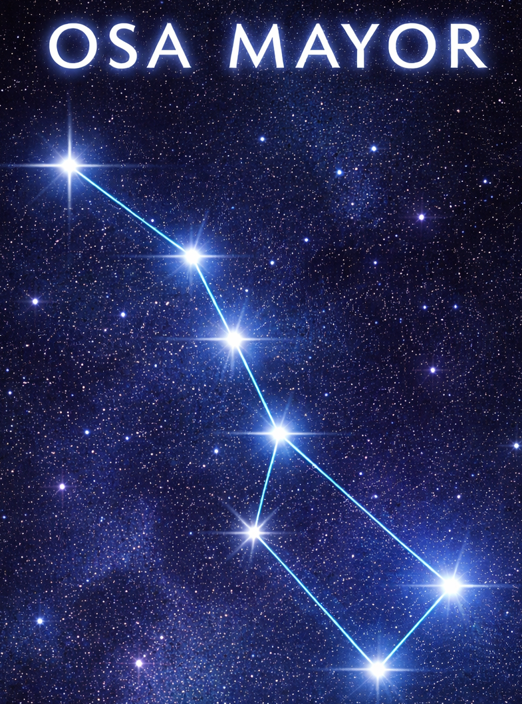
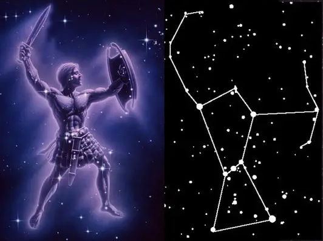

Las constelaciones son grupos de estrellas que, vistas desde la Tierra,
forman figuras imaginarias en el cielo nocturno. Desde la antigüedad,
las civilizaciones las han utilizado para orientarse, contar historias
mitológicas y comprender mejor el universo.

